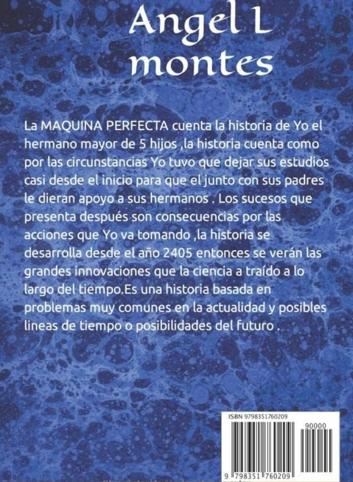
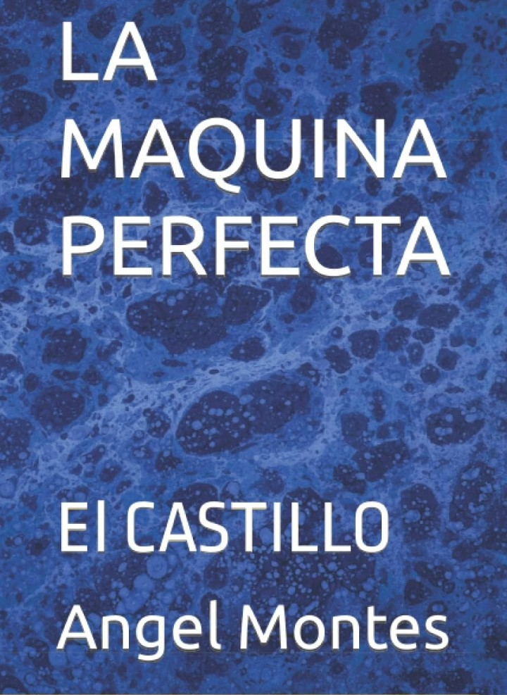
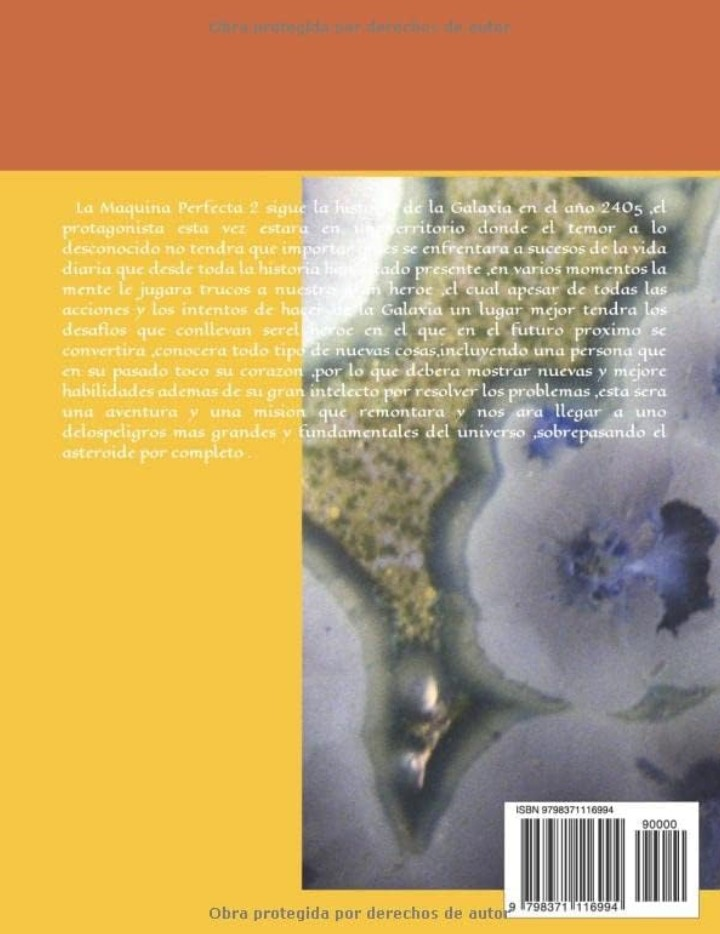
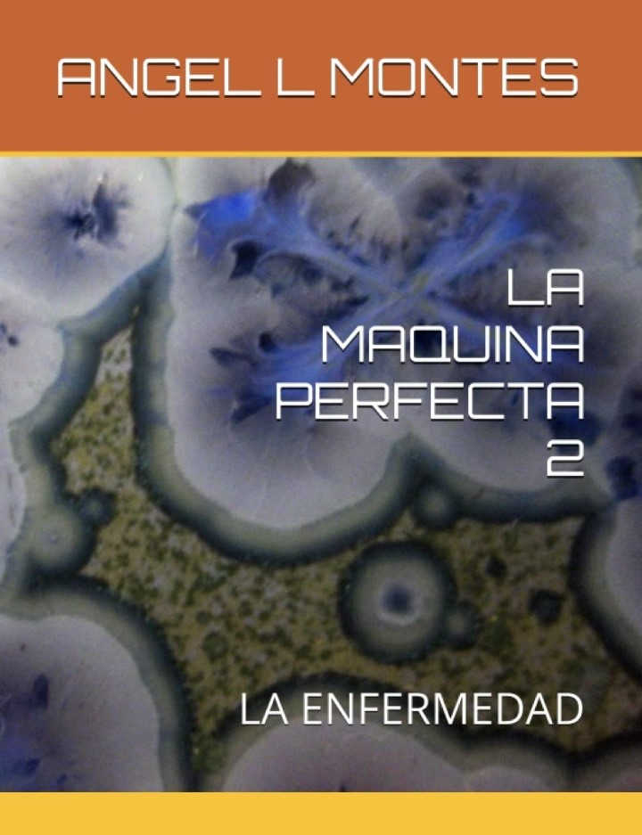
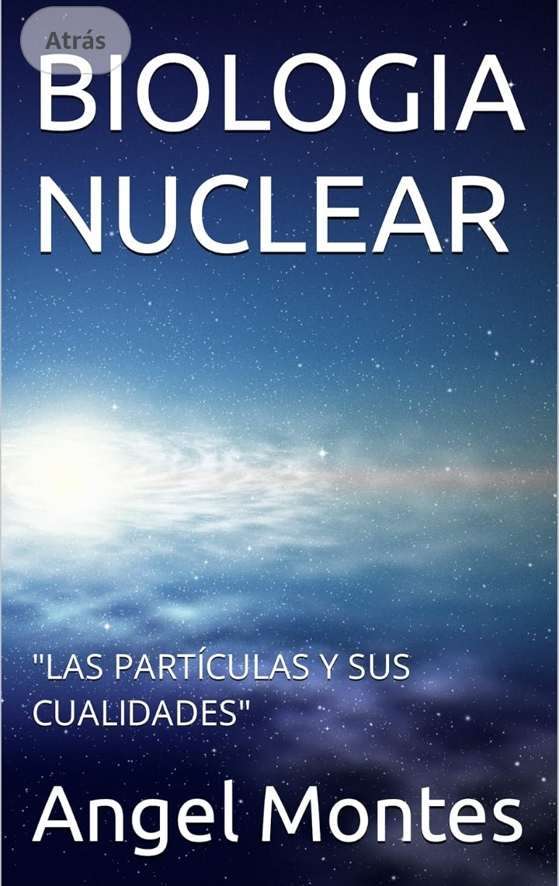
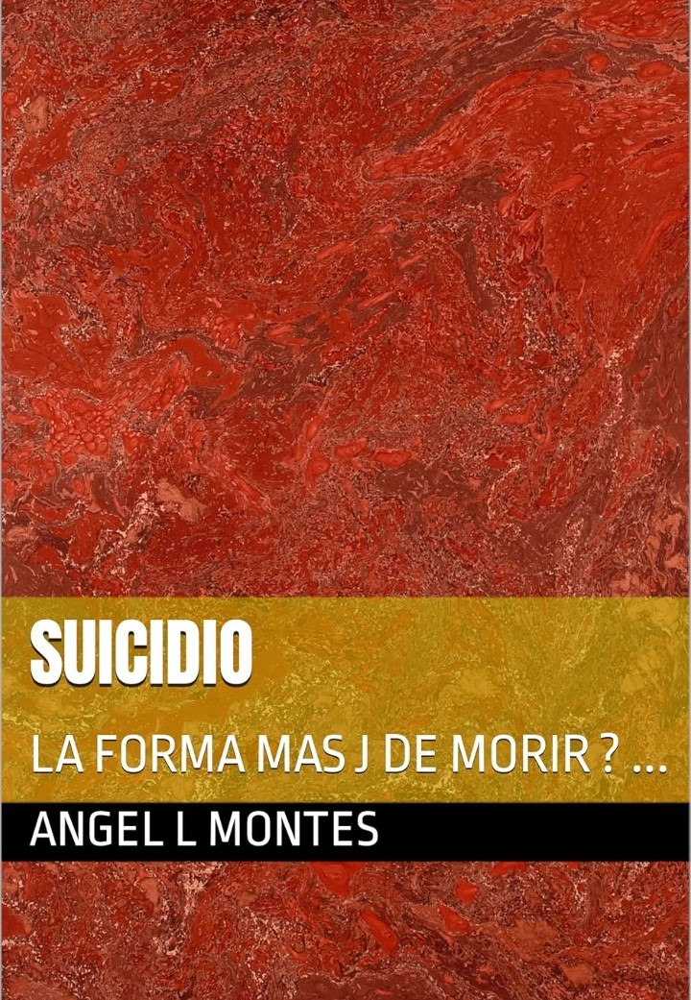

"Mi Vida" es una app de escritorio para PC o laptop tiene diferentes funcionalidades, todas y cada una con la intención de ayudar al usuario a mejorar su salud y vida, cuenta con una estructura muy simple pero eficiente, cada una de sus respuestas han sido investigadas meticulosamente en fuentes confiables, además de tener un buen diseño gráfico en primera instancia, cuenta con diversas imágenes de apoyo visual que pudieran ser de gran utilidad tanto para el paciente que posiblemente investigue su padecimiento, hasta una ayuda de asesoría o acordeon para cualquier médico que tenga la intención de reforzar sus conocimientos, y experimentar un poco con el sistema, actualmente sólo cuenta con 2 tipos de síntomas que diagnostican más de 10 enfermedades en cuestión de segundos y con base a 5 simples preguntas, pero se está trabajando para mejorar aun mas su eficiencia y calidad enlos resultados, aunque por el momento su efectividad ya es mayor al 70% de resultados asertivos, por último cabe mencionar que es una app completamente gratuita y que ocupa muypoco espacio, aventúrate a la investigación y descubrimiento de este nuevo sistema, que en algún momento futuro pudiera llegar a salvarte la Vida.


"La Máquina Perfecta: El castillo" Este es el primer libro creado y escrito por Angel L Montes, en el se narra la historia de un joven anónimo del futuro en el siglo XXV que por medio de sus experiencias y aprendizajes, va adquiriendo nuevas y mejores habilidades que en futuras entregas lo convertirán en la esperanza de la humanidad, comenzando por una narrativa general sobre hechos y acontecimientos mencionados desde el presente, este libro trata de dar una perspectiva mas amplia de lo que es caragr con un gran peso aun teniendo todas las herramientas a tu siposición, asimismo da a conocer diferentes valores, recompensas y desafíos, que pondrán en intriga al espectador desde su comienzo, se muestra una diversidad de ideas tecnológicas, así como una gran intensidad de drama por medio de cada uno de los acontecimientos que se le iran presentando a nuestro protagonista, aventurate a leerlo y descubre las maravillas de realismo y ficción que este libro taerá para tí.


"La Máquina Perfecta 2: La Enfermedad" este libro es la continuación directa de su antecesor "La Máquina Perfecta: El Castillo"sigue la historia de el héroe anónimo representando en cada uno de nosotros, en esta nueva entrega se busca explorar temas mas relacionados con la medicina, el pensamiento humano, y la amistad, busca mas que entretener dar al lector una reflexión breve de lo que representa la verdadera amistad, conforme transcurren los acontecimientos el protagonista adopta varios comportamientos que suelen ser naturales a su edad, tambien con base a sus acciones estas le llegan a generar una diversidad de consecuencias que con el tiempo se vuelven experiencias importntes que podrían marcar su vida para siempre, se explora una posibilidad de lo que lograría la tecnología y los sistemas avanzados en el futuro, explora un mundo donde el lector sabe que puede ser el futuro distante, sin embargo sigue temáticas del presente que aunque parecen repetitivas, la historia hace valorar su importancia dentro de los acontecimientos, cada capítulo de esta nueva entrega te dará una importantre perspectiva sobre la juventud y con empatía se busca que goce el lector identificarse con el protagonista.

"Biologia Nuclear: Las Partículas y sus cualidades" Este libro, es sólo la teoría basada en la comprensión y la investigación de muchos años sobre las partículas que nos rodean todo el tiempo y en todo momento, que no podemos ver, oír, escuchar, sentir o probar cuando estan en unidad, pero que son parte fundamental de nuestro entorno cotidiano y hacen posible lo que se conoce como "realidad", cada uno de los conceptos y teorías que se presentan en este libro aunque bien parecen ficción o fantasia, la mayoría han sido estudiados por décadas desde hace siglos, y aunque ninguno de los conceptos es sacado directamente del internet, su veracidad aplica al mas del 85% de su contenido, y si bien pudiera tener algunas fallas que muchos vean en sus conceptos y significados, esto hace que dependa mas de la perspectiva de la persona que lo lea que de la información en sí, este libro no pretende dar una educación profunda en sí, sino mas bien dar a conocer que en las cosas mas pequeñas o en las estructuras mas invisibles, suelen estar los cambios mas grandes, asimismo, busca dar a conocer un enfoque sobre muchos de lo fenómenos qe ocurren en nuestra conciencia, y en lugar de dar un significado concreto sobre la mente, busca abrir el razonamiento a la perspectiva de cada quien, mediante un enfoque mas libre e independiente, de modo de que el lector, sepa que tiene la libertad total de cambiar su propia realidad con pequeños actos que se vuelven gigantes con el tiempo, y con ello su futuro.

"Suicidio: La forma mas J de morir?" Es un libro de reflexión creado con la intención de ayudar a las personas en los momentos mas difíciles, no trata sobre ganar dinero, pero sí trata de animar al lector de encontrar su propósito en la vida, dandole el panorama completo sobre la realidad de la situación, no es un libro que busque específicamente ser entendido con claridad, busca darle un pequeño apoyo emocional al lector con conceptos básicos de la psicológia sobre la salud mental, y la importancia de la vida, da a conocer, la soledad así como al sentimiento, mas como una experiencia independiente y natural que como un espacio donde el sufrimiento y la desesperación gobiernan, por medio de humor negro, uno que otro modismo sin sentido, es un libro que busca hacer que sus palabras sean un consejo directo de el escritor hacia el lector, mas que como un libro de información psicológica normal, la interpretación del contenido de este libro así como muchos de sus conceptos y moralejas es muy independiente de cada persona, cabe mencionar que aunque la intención es ayudar a las personas y si es posible salvar vidas indirectamente no es un libro que contenga todas las respuestas o busque asignarle al lector diversas tareas específicas para mejorar su vida,una vez mas todo lo anterior queda a interpretación del lector y su interes por la obra. Si tienes algún conocido, amigo o familiar, metido profundamente en algún problema como el alcoholismo, las drogas, o el tabaco, este libro pudiera serle de mucha ayuda, no obstante, tambien ayuda a todas esas personas que puderan sentirse solas y sin esparanza, date el tiempo para leerlo, y agradece a la vida por un día mas.